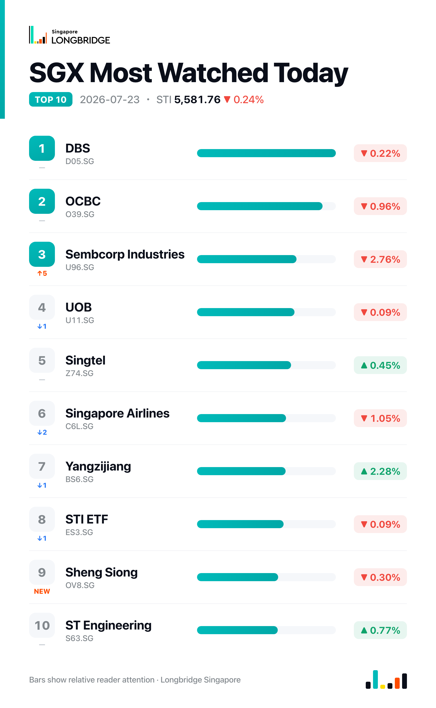

STI Slips 0.24% Off Record as Banks Retreat, Yangzijiang Bucks the Pullback
The Straits Times Index closed down 0.24%, or 13.66 points, at 5,581.76 on Thursday, pulling back from Wednesday's record close of 5,595.42. The retreat was mixed rather than one-sided: 15 of the 30 constituents fell against 12 advancers and three unchanged, as the three local banks — the engine behind this week's record run — gave back some ground while Yangzijiang Shipbuilding extended its advance.
The session opened already softer, with the index starting the day down 0.24% at 5,581.93 amid profit-taking in bank counters; OCBC, Sembcorp Industries and DFI Retail were flagged among the day's largest decliners, even as a handful of stocks, including Keppel, held higher. The move followed two straight sessions in which the same bank counters had driven the index to successive highs, leaving Thursday looking more like a pause than a reversal of the broader uptrend.
Session Movers
Yangzijiang Shipbuilding (BS6.SG, +2.28%) extended its recent advance as research coverage kept its order book in focus: the yard has vessels on hand through 2030, while a report on the Jiangsu Jingjiang shipbuilding hub noted new orders there rose 92% year-on-year in the first five months of 2026. The stock had already been supported by a US$66 million bulk-carrier contract signed on 20 July for two vessels of about 26,700 gross tonnes each, due for 2028 and 2030 delivery, and a Buy reiteration from DBS. It trades at 9.88 times earnings, cheaper than roughly 23% of its ten-year range.
Sembcorp Industries (U96.SG, -2.76%) was named among Thursday's largest decliners in the broader bank-led profit-taking, giving back part of the gains it drew after 20 July coverage tied the stock to Singapore's energy-transition opportunities as oil pushed above US$90 a barrel. Consensus rating remains Buy, with a target implying about 28% upside.
Singapore Airlines (C6L.SG, -1.05%) traded lower a day ahead of its 24 July annual general meeting, after flagging a S$945.2 million share of Air India's FY2025/26 losses that cut the carrying value of its 25.1% stake to S$1.13 billion; the carrier said it remained open to further capital requests from the Indian associate. Consensus rating is Hold, with a target implying about 8% downside.
DFI Retail (D01.SG, -5.29%) posted the steepest decline among Thursday's movers and was also cited among the session's largest fallers in the broad bank-led profit-taking; no fresh company-specific catalyst stood out in the day's newsflow beyond a 6 July change of group CFO. At 0.55 times sales, the stock trades cheaper than about 63% of its one-year range, against a Strong Buy consensus implying roughly 50% upside.
One point worth noting
DFI Retail's 5.29% drop was more than five times the steepest bank decline of the day — OCBC's 0.96% — and breadth across the 30-stock basket was close to even, at 15 decliners against 12 advancers and three unchanged. That points to a single-name air pocket rather than a broad-based selloff: Thursday's -0.24% headline undersells how localized the session's damage actually was.
This recap is for informational purposes only and does not constitute investment advice.
